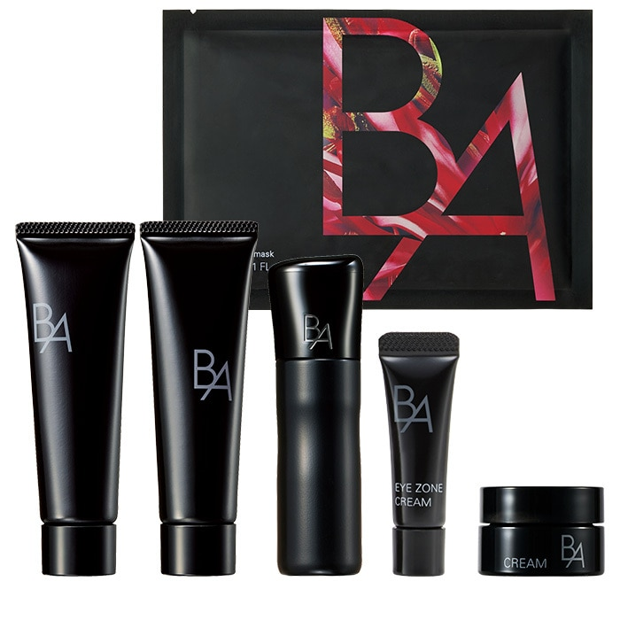

NOVEMBER 2026 · POLA
11月新品资讯 · 可复制文案
11月日本美妆新品｜POLA自选礼盒 POLA 11月B.A冬季套装可以选择主商品，标价是起价，不能当作所有组合统一价。 这次有什么？ 自选主商品，搭配护理迷你与限定面膜；具体组合随主商品变化。 • B.A 自选冬季护肤套装：日本含税¥15,400起 什么时候卖？ • B.A 自选冬季护肤套装：11月01日；媒体列百货10/1、官方线上10/22预约；具体入口与额度待核实。 未核实先行安排。 购买前看这里 按自己选定的正装核算价格，勿把¥15,400起写成整套固定价格。 近铁天王寺、大丸心斋桥的具体安排与库存，以专柜回复为准。 #日本美妆新品 #11月新品 #圣诞限定 信息依据核对日期：2026-10-19 文案格式更新：2026-10-25（未重新核验全部日期与库存） 来源：品牌／百货／媒体，具体链接如下 https://www.pola.co.jp/ec/campaign/winter-collection-2026-02.aspx

B.A シンボリックコレクション日本含税 ¥15,400 · 发售 2026-11-01
媒体列百货10/1、官方线上10/22预约；具体入口与额度待核实。未核实先行安排。
¥15,400起，随主商品变化；不是固定价格套装。